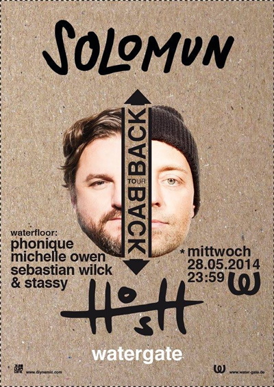

Solomun B2B HOSH @ Watergate (28/05/14)
{kind=link}

The association that Hamburg heavy Solomun has with Berlin’s Watergate Club is one that predates his transformation into a mainroom house don, with his presence at Berlin’s iconic riverside venue going back to the days when he was perhaps better known for the old-school funk and disco sensibilities that comprised his Watergate 11 compilation.
Solomun commands huge crowds nowadays though, and in addition to returning to his Ibiza residencies this year, he’s been touring Europe alongside Diynamic Music labelmate H.O.S.H., for a series of back-to-back parties that sees them manning the decks together for the entire evening; from start to close. So naturally, it was a no-brainer that Watergate was chosen for the Berlin leg of the tour; with it all going down on a Wednesday night, no less.
Solomun and H.O.S.H. were behind the decks from the moment Watergate’s LED-lit mainfloor was opened shortly after midnight, and it was a party that saw the venue’s charms used to full effect. Watergate contrasts with the gritty appeal of a lot Berlin’s other dancefloors, though nonetheless it still ranks as one of the world’s best clubs, for a variety of reasons. Starting with its serenely gorgeous riverside location, it also boasts a sound system that’s been tuned flawlessly for the kind of acts they book, as well as a comfortable layout that prioritises Germanic functionality above all else. If you wanna see a DJ take control for the entire evening, this is the perfect place.
The first few hours of their back-to-back set was perhaps more in tune with the deeper, mellower side of the Dynamic Music stable, known and loved by longtimers. This early start meant they had the chance to warm things up in a professional manner with some tempered, slower-pace grooves. The excitement really was building, though it didn’t really kick up a gear until just before 3am when Maceo Plex "Aint That Love" made an appearance. As soon as they hit this first peak though, the duo managed to hold a frenzied energy in the crowd for the remainder of the evening.
From here on in, it was a rollercoaster ride of entertainment as Solomun and H.O.S.H. took turns behind the decks of keeping the energy high; though without losing the crowd’s attention, a feat they managed by keeping the tone of the records on constant rotation. Taking it down into some dirty, deep grooves just prior to 4am, it was the prelude to unleashing some real techy slammers, which led eventually into the crowdpleasing peak of Solomun’s mix of Let’s Go Dancing. It’s surprising how much functional impact this tune when it’s being wielded over a punchy soundsystem, and it’s crystal clear what Solomun had in mind while in the studio.
{kind=link}
Neither H.O.S.H. nor Solomun were afraid to pitch things into some bigroom progressive house vibes. The grindy, chunky noise of Veerus & Maxie Devine "The Sound" steers dangerously close to the appeal of the EDM mainstage, though stops just short; it’s perhaps as bangin’ as the Diynamic sound will ever get. Olivier Giacomotto’s "Lovin’ Berlin" offered a techier variation on these fist-pumpin’ sounds just prior to 5am, before they masterfully dropped the energy back down with Metro Area’s 2001 classic "Muira". Well played boys.
The evening was the perfect foil to the ‘brief and bland’ DJ set, which are often simply a showcase of the performer’s own studio work. Solomun and H.O.S.H. had zero trouble commanding the attention of the room for the entire evening, and their versatility really was on display. Building the energy from the start, the marathon set was a testament the simple power of dropping the right track, at the right tempo, at the exactly right time.
The pair’s teamwork was seamless, though it also demonstrated Solomun’s evolution into a proper mainroom DJ superstar. The sounds were bombastic, crowd-pleasing and entertaining, without losing the technical polish, credibility or attention to detail. Little wonder he’s held onto his Ibiza residencies, as he’s got star power to burn.
Watergate
Falckensteinstrasse 49, Kreuzberg, 10997 Berlin, Germany
www.water-gate.de